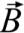
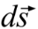

Breve descripción de la ley de Ampère y sus aplicaciones
La ley de Ampère conduce a una de las cuatro leyes fundamentales del electromagnetismo.
La ecuación de esta ley es la siguiente:
El círculo sobre el símbolo de integral representa una integral en una trayectoria cerrada,  es un vector de campo magnético,  es un vector diferencial de línea, μ0 es la constante de permeabilidad del vacío e i la corriente eléctrica.
La parte izquierda en la ecuación es la evaluación del producto escalar entre y para cada elemento infinitesimal ( ) en el que se divide la trayectoria cerrada, sumando todas las contribuciones.
En la parte derecha, i es la corriente total que pasa por los alambres conductores que atraviesan la superficie encerrada por la trayectoria recorrida. Esta trayectoria cerrada, imaginaria, se denomina anillo amperiano.

Ejemplos de trayectorias cerradas, se les denomina "cerradas" porque comienzan y terminan en un mismo punto.
La ley de Ampère permite calcular la magnitud de un campo magnético de forma sencilla en problemas que tienen un alto grado de simetría. Esto permite escoger la forma del anillo amperiano de manera que el campo magnético sea constante a lo largo de toda la trayectoria, o en segmentos de ésta, y así pueda ser extraído de la integral.
Es posible que existan corrientes que pasan tanto fuera, como dentro del anillo, todas contribuyen al campo magnético en los puntos del anillo, sin embargo, el resultado de la integral sólo depende de las corrientes que atraviesan la suerficie delimitada por el anillo. Para una corriente externa, el producto cambia de signo al recorrer el anillo y las diferentes contribuciones se cancelan.
Por otro lado, puede que dentro de un mismo anillo se encuentren corrientes con direcciones
opuestas,
por ello, se requiere usar la regla de la mano derecha para asignar el signo positivo o negativo
de
una corriente.
Dicha regla indica que, si ponemos el pulgar de la mano derecha en la misma dirección que la corriente eléctrica, la curva formada por los demás dedos de la mano nos indicarón la forma y el sentido de las líneas de campo, como observamos en la figura. Al ser un campo vectorial, el campo magnético se representa con una B en negritas o con una flecha sobre él.
A continuación, podrás encontrar los enlaces correspondientes a seis visualizaciones en realidad aumentada que representan distintas formas que puede tener un alambre conductor de corriente (con forma arbitraria, de recta, de solenoide y de toroide). Cuando una corriente pasa a través de él, se genera un campo magnético cuyas líneas se encuentran representadas en color verde.
En algunas visualizaciones, también aparecen anillos amperianos con distintas formas, de acuerdo con la simetría que tienen las líneas de campo magnético.
La intención de las visualizaciones es que puedas observar representaciones de lo que acabas de aprender acerca de la ley de Ampère de una forma interactiva, en 3D y desde distintas perspectivas, para facilitar la comprensión de la situación física de cada problema.
Fuentes:
Halliday, D., Resnick, R. y Krane, K. (1999). Física Volumen 2. México: Compañía
Editorial Continental.
Purcell, E. & Morin, D. (2013). Electricity and magnetism.
Estados
Unidos de América: Cambridge University Press.

.png)